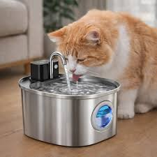
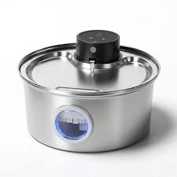
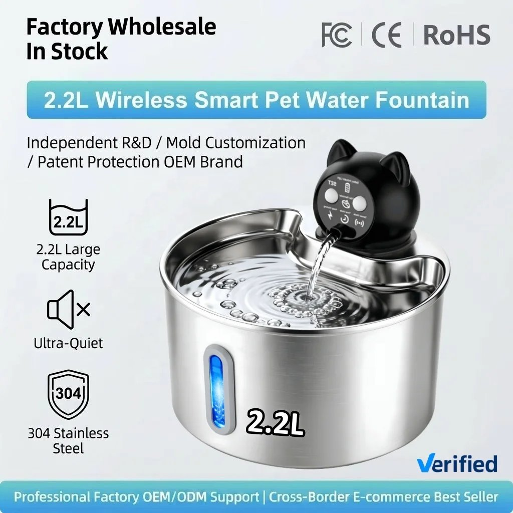

Éloignez l’eau de la nourriture et de la litière
Beaucoup de chats préfèrent que leur eau soit à l’écart de leur gamelle de nourriture et, bien sûr, de la litière. Placez le point d’eau dans un endroit calme, à quelques mètres de la zone repas.
Multipliez les points d’eau
Un seul bol dans toute la maison, c’est peu. Installez un point d’eau dans chaque pièce où votre chat passe du temps : salon, chambre, couloir. Plus l’eau est facile à trouver, plus il a de chances d’en boire.
Choisissez une gamelle large et peu profonde
Certains chats n’aiment pas que leurs moustaches touchent les bords. Préférez un récipient large et peu profond, en inox ou en céramique, plus agréable et plus facile à garder propre que le plastique.
Changez l’eau tous les jours
Une eau fraîche et propre attire davantage. Videz, rincez et remplissez chaque jour, même si le bol semble encore plein.
Proposez de l’eau en mouvement
Beaucoup de chats sont attirés par l’eau qui bouge. C’est l’une des astuces les plus efficaces, et c’est là qu’une fontaine peut aider.
Fontaine à eau sans fil JUYANG



- ● 2,2 L de réservoir (moins de remplissages)
- ● Acier inoxydable (durable, facile à nettoyer)
- ● Rechargeable et sans fil (à placer où l’on veut, sans chercher de prise)
Livraison gratuite · Livraison en 7 à 14 jours
Découvrir la fontaineFaites la transition en douceur
Ne retirez pas l’ancienne gamelle du jour au lendemain. Installez la fontaine à côté pendant quelques jours, dans un endroit calme, et laissez votre chat la découvrir à son rythme. Quelques gouttes d’eau au bord suffisent parfois à piquer sa curiosité.
Entretenez-la régulièrement
Une fontaine propre reste attirante. Réflexes simples :
- — nettoyez régulièrement le réservoir et les surfaces en contact avec l’eau ;
- — utilisez une éponge douce et un produit nettoyant adapté, puis rincez soigneusement ;
- — nettoyez la pompe selon les instructions du fabricant pour éviter l’accumulation de poils et de résidus ;
- — évitez d’immerger les composants électriques ou la batterie ;
- — vérifiez régulièrement l’état du matériel et arrêtez de l’utiliser en cas de dysfonctionnement.